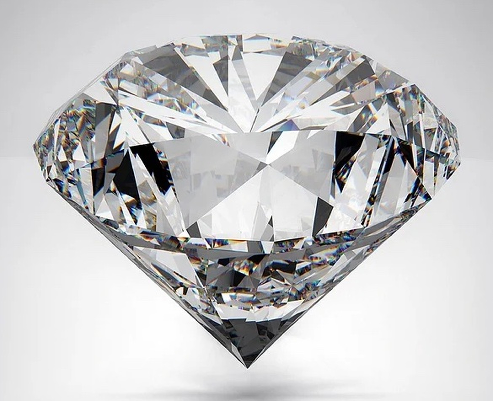

鑽石的顏色·為什麼白為貴·色更高Why Are Colorless Diamonds More Valuable While Fancy Colors Can Be Worth Even More?
The World of Gemstones · Diamond SeriesWhy Are Colorless Diamonds More Valuable While Fancy Colors Can Be Worth Even More?
The World of Gemstones · Diamond Series鑽石的顏色·為什麼白為貴·色更高
寶石世界·鑽石篇
寶石世界·鑽石篇（107）The World of Gemstones · Diamond Series (107)
人們選購鑽石時，常常會被一個問題困擾：為什麼越「白」的鑽石，價格越高？在日常經驗中，顏色通常意味著豐富與美感，但在鑽石的世界裡，情況似乎正好相反。
這種看似矛盾的現象，其實與鑽石本身的形成方式有關。
按照寶石學的觀點，理想的鑽石應該是完全由碳構成的純淨晶體。如果在形成過程中沒有任何雜質進入晶體結構，那麼這顆鑽石在光線下應該呈現為完全透明，也就是我們所說的「無色」。
然而，在自然界中，這樣的理想狀態極為罕見。大多數鑽石在形成過程中，多少都會混入其他元素，其中最常見的是氮。當少量氮原子取代部分碳原子的位置時，便會影響鑽石對光的吸收，使其呈現出淡黃色或淺褐色。
這種顏色並不是「附著」在鑽石表面，而是來自晶體內部的結構變化。因此，它無法被簡單物理手段去除，而是鑽石晶體本身的一部分。
那麼，目前的鑽石市場如何判斷鑽石顏色的高低、好壞與價值，就需要一套能被世界鑽石業界及消費者共同接受的統一顏色鑑定與評價標準。
人們選購鑽石時，常常會被一個問題困擾：為什麼越「白」的鑽石，價格越高？在日常經驗中，顏色通常意味著豐富與美感，但在鑽石的世界裡，情況似乎正好相反。
這種看似矛盾的現象，其實與鑽石本身的形成方式有關。
按照寶石學的觀點，理想的鑽石應該是完全由碳構成的純淨晶體。如果在形成過程中沒有任何雜質進入晶體結構，那麼這顆鑽石在光線下應該呈現為完全透明，也就是我們所說的「無色」。
然而，在自然界中，這樣的理想狀態極為罕見。大多數鑽石在形成過程中，多少都會混入其他元素，其中最常見的是氮。當少量氮原子取代部分碳原子的位置時，便會影響鑽石對光的吸收，使其呈現出淡黃色或淺褐色。
這種顏色並不是「附著」在鑽石表面，而是來自晶體內部的結構變化。因此，它無法被簡單物理手段去除，而是鑽石晶體本身的一部分。
那麼，目前的鑽石市場如何判斷鑽石顏色的高低、好壞與價值，就需要一套能被世界鑽石業界及消費者共同接受的統一顏色鑑定與評價標準。
GIA，即美國寶石學院（Gemological Institute of America），是全球最具影響力的寶石鑑定與教育機構之一。它所建立的鑽石分級體系，目前已經成為國際通行的標準。
GIA 將無色至淺黃色、淺褐色範圍內的鑽石顏色，按照英文字母 D 到 Z 劃分為五個大的級別：
D～F 級，稱為無色（Colorless）：屬於最高顏色等級，極為接近無色，也非常稀有；
G～J 級，稱為近乎無色（Near Colorless）：肉眼通常難以察覺明顯顏色，價格又較具性價比，因此是市場上非常受歡迎的選擇；
K～M 級，稱為微黃（Faint）：肉眼可以看見輕微的黃色或褐色色調；
N～R 級，稱為極淺色（Very Light）：可以看見較為明顯的黃色或褐色色調；
S～Z 級，稱為淺色（Light）：帶有更加明顯的淡黃色或淡褐色。
其中，D 代表最高的無色等級；隨著字母向後推進，鑽石的黃色或褐色色調逐漸增加。到了 Z 級，已經可以呈現出相當明顯的淺黃色或淺褐色。
按照 GIA 的鑑定標準，這種分級需要在嚴格控制的光源與觀察環境中，由受過專業訓練的人員，將待測鑽石與顏色標準樣品石進行對比判定。也就是說，這種嚴格分級並不是依靠肉眼隨意判斷，而是一套高度規範化的鑑定流程。
那麼，為什麼「無色」會成為白色鑽石顏色的最高標準？
從光學角度看，無色鑽石對可見光的選擇性吸收較少，光線能夠更完整地進入鑽石，在內部反射、折射與產生色散，從而呈現出良好的亮度與火彩。當鑽石帶有較明顯的黃色或褐色色調時，部分波長的光會被吸收，使鑽石整體呈現出顏色。
因此，在其他條件相同的情況下，越接近無色，通常就越符合傳統白鑽市場對純淨外觀的追求。
然而，在現實世界的日常佩戴環境中，許多相鄰顏色等級之間的差異，其實很難被肉眼分辨。例如 D、E、F 等高等級鑽石之間，差異非常細微；在某些情況下，G 或 H 級的鑽石在正常光線下也會顯得十分潔白。
這說明，顏色等級的價值並不完全來自肉眼所見的差異，更重要的是來自實驗室的專業分級，以及其在自然界中的稀有程度。越接近無色的鑽石，天然出現的概率通常越低，因此價格也會隨之提高。
不過，在大自然創造的鑽石世界中，並非全部都是「無色鑽石」，還存在另外一個完全不同的世界，那就是彩色鑽石。
並不是所有帶顏色的鑽石，都會因為顏色而降低價值。在某些情況下，鮮明而罕見的顏色反而會使鑽石變得更加珍貴。當鑽石呈現出明顯而具有吸引力的藍色、粉紅色、紅色、綠色或其他顏色時，它們便進入了「彩色鑽石」的評價體系。
這些顏色的形成原因各不相同。藍色鑽石通常與晶體中含有硼元素有關；黃色通常與氮元素有關；粉紅色與紅色，則多與晶體結構受到壓力後產生的變形有關。
與普通白鑽不同，彩色鑽石的價值不再取決於「是否無色」，而主要取決於顏色的色相、濃度、飽和程度、分布與稀有性。
在 GIA 的彩色鑽石分級中，使用的是另一套顏色強度描述系統，例如 Fancy Light、Fancy、Fancy Intense、Fancy Vivid 等，用來表示顏色的濃淡與視覺效果。
這意味著，在鑽石的世界裡，「顏色」並沒有單一的價值標準。無色鑽石追求的是純淨與接近無色，而彩色鑽石追求的，則是鮮明、濃郁、稀有與個性。
在真正的鑽石市場上，有時彩色鑽石的價格會遠遠高於無色鑽石。所以市場上流傳著一句行話：「白為貴，色更高。」這裡所說的「高」，就是指某些稀有彩色鑽石的價格，可能比頂級無色鑽石還要高。關於彩色鑽石，我們以後還會詳細介紹。

Click to enlarge
現在回到最初的問題：為什麼鑽石越白、越接近無色，就越貴？
答案其實很簡單。在無色鑽石的評價體系中，顏色越少，通常代表晶體越接近理想的無色狀態，也更加稀有。市場向來都是物以稀為貴，因此，越稀少的高顏色等級鑽石，價值也就越高。當然，接近無色的鑽石，也更符合許多消費者對潔白、純淨外觀與良好光學表現的追求。
但是，如果進入彩色鑽石的世界，規則就會完全改變。這樣的對比，也讓鑽石的顏色變得更加有意思。它既可以是「顏色越少越珍貴」，也可以是「顏色越濃越珍貴」。
這兩套不同的鑽石顏色鑑定與評價標準，其實並不矛盾，而是針對不同類型鑽石建立的不同價值體系。其根本原因，仍然與市場需求和天然稀缺程度密切相關。標準雖然由人建立，但它所反映的，正是人類對稀有、美感與價值的共同理解。
也許正因如此，鑽石的顏色標準與分類，不只是一種物理現象的描述，更像是人類價值觀在鑽石鑑定與定價標準中的具體體現。這些分級影響著不同顏色鑽石的市場價格，而價格背後所反映的，其實正是人類的選擇、審美與喜好。
（未完待續）
When people shop for a diamond, they are often puzzled by one question: Why do the "whiter" diamonds usually command higher prices? In everyday life, color is often associated with richness and beauty. Yet in the world of diamonds, the opposite seems to be true.
This seemingly contradictory phenomenon is closely related to the way diamonds are formed.
From the perspective of gemology, an ideal diamond is a crystal composed entirely of pure carbon. If no foreign elements enter the crystal structure during its formation, the diamond should appear completely transparent under light—in other words, what we call colorless.
In nature, however, such perfection is extremely rare. Most diamonds contain trace amounts of other elements that entered the crystal during their formation. The most common impurity is nitrogen. When a small number of nitrogen atoms replace carbon atoms within the crystal lattice, they alter the way the diamond absorbs light, giving it a faint yellow or light brown appearance.
This color is not something that coats the surface of the diamond. Instead, it originates from changes within the crystal structure itself. Consequently, it cannot be removed by ordinary physical methods; it is an inherent part of the diamond.
When people shop for a diamond, they are often puzzled by one question: Why do the "whiter" diamonds usually command higher prices? In everyday life, color is often associated with richness and beauty. Yet in the world of diamonds, the opposite seems to be true.
This seemingly contradictory phenomenon is closely related to the way diamonds are formed.
From the perspective of gemology, an ideal diamond is a crystal composed entirely of pure carbon. If no foreign elements enter the crystal structure during its formation, the diamond should appear completely transparent under light—in other words, what we call colorless.
In nature, however, such perfection is extremely rare. Most diamonds contain trace amounts of other elements that entered the crystal during their formation. The most common impurity is nitrogen. When a small number of nitrogen atoms replace carbon atoms within the crystal lattice, they alter the way the diamond absorbs light, giving it a faint yellow or light brown appearance.
This color is not something that coats the surface of the diamond. Instead, it originates from changes within the crystal structure itself. Consequently, it cannot be removed by ordinary physical methods; it is an inherent part of the diamond.
So how does today's diamond market determine the quality, value, and desirability of a diamond's color? The answer lies in a standardized grading system that has been accepted worldwide by both the diamond industry and consumers.
The Gemological Institute of America (GIA) is one of the world's most influential institutions for gemological education and diamond grading. The diamond grading system developed by GIA has become the international standard.
GIA classifies diamonds ranging from colorless to light yellow or light brown into five broad color groups, using the letters D through Z:
D–F: Colorless — The highest color grades, exceptionally close to completely colorless and extremely rare.
G–J: Near Colorless — Usually appear colorless to the unaided eye while offering excellent value, making them among the most popular choices in today's market.
K–M: Faint — A slight yellow or brown tint becomes visible.
N–R: Very Light — Yellow or brown coloration is more noticeable.
S–Z: Light — The diamond displays an obvious light yellow or light brown hue.
Among these grades, D represents the highest level of colorlessness. As the alphabet progresses toward Z, yellow or brown coloration gradually becomes more apparent.
According to GIA standards, this grading process must be performed under carefully controlled lighting and viewing conditions by trained professionals who compare the diamond with standardized master stones. In other words, color grading is not based on casual visual impressions but on a highly standardized and scientific evaluation procedure.
Why, then, has colorless become the highest standard for white diamonds?
From an optical standpoint, a colorless diamond absorbs less visible light selectively. As a result, light can enter the diamond more completely, where it is reflected, refracted, and dispersed within the crystal, producing outstanding brilliance and fire. When noticeable yellow or brown coloration is present, certain wavelengths of light are absorbed, causing the diamond to display its body color.
Therefore, when all other factors are equal, the closer a diamond is to colorless, the more closely it meets the traditional market preference for a pure white appearance.
In everyday wearing conditions, however, the differences between many neighboring color grades are actually quite difficult for the human eye to distinguish. For example, the differences among D, E, and F diamonds are extremely subtle. Under normal lighting, even G or H diamonds often appear beautifully white.
This illustrates that the value of a color grade does not come solely from visible differences. It also reflects laboratory grading standards and, more importantly, the rarity of these diamonds in nature. The closer a diamond is to being colorless, the less frequently it occurs naturally, and the higher its market value tends to be.
Yet the natural world of diamonds is not limited to colorless stones. There exists an entirely different and fascinating category known as fancy-color diamonds.
Not every colored diamond loses value because of its color. In certain cases, vivid and rare colors actually make a diamond far more valuable. When a diamond exhibits attractive blue, pink, red, green, or other distinctive colors, it enters the grading system for fancy-color diamonds.
The origins of these colors vary. Blue diamonds are usually associated with the presence of boron in the crystal. Yellow diamonds are typically caused by nitrogen. Pink and red diamonds, on the other hand, are generally believed to result from distortions in the crystal lattice caused by enormous geological pressure.
Unlike ordinary white diamonds, the value of fancy-color diamonds is no longer determined by how close they are to colorless. Instead, it depends primarily on their hue, intensity, saturation, distribution of color, and rarity.
GIA uses a completely different grading system for fancy-color diamonds, employing terms such as Fancy Light, Fancy, Fancy Intense, and Fancy Vivid to describe the strength and visual impact of the color.
This means that within the world of diamonds, color does not follow a single value system. Colorless diamonds are prized for purity and the absence of color, while fancy-color diamonds are valued for vividness, richness, rarity, and individuality.
In the real diamond market, some fancy-color diamonds can sell for prices far exceeding those of the finest colorless diamonds. This explains an old saying often heard in the trade:
"White is precious; color can be even more valuable."
Here, "more valuable" refers to the fact that certain exceptionally rare fancy-color diamonds may command prices higher than even the finest colorless stones. We will explore the fascinating world of fancy-color diamonds in much greater detail later in this series.
Click to enlarge
Now let us return to our original question: Why are the whitest, most nearly colorless diamonds generally more expensive?
The answer is actually quite straightforward. Within the grading system for colorless diamonds, the less color a diamond possesses, the closer it is to the ideal colorless state and the rarer it tends to be in nature. Since rarity has always been one of the foundations of value, diamonds with the highest color grades naturally command higher prices. Moreover, near-colorless diamonds better satisfy many consumers' preference for a clean, pure appearance and outstanding optical performance.
Once we enter the world of fancy-color diamonds, however, the rules change completely. This contrast makes diamond color all the more fascinating. In one system, less color means greater value; in the other, more vivid color means greater value.
These two color grading systems are not contradictory. Rather, they represent two distinct methods of evaluating two different categories of diamonds. Ultimately, both systems are rooted in the same fundamental principles: market demand and natural rarity. Although grading standards are created by people, they reflect humanity's shared understanding of rarity, beauty, and value.
Perhaps that is why diamond color grading is more than simply a description of a physical property. It is also a reflection of human values expressed through the evaluation and pricing of diamonds. These grading systems influence market prices, while the prices themselves ultimately reveal our collective choices, aesthetic preferences, and appreciation of rarity.
(To be continued)